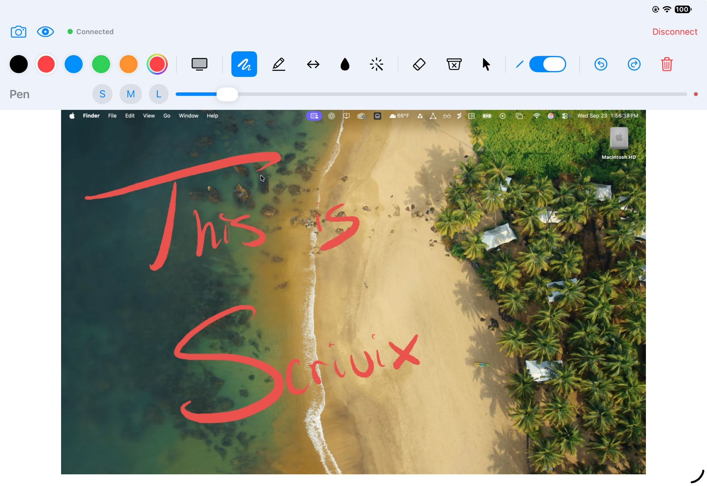

A · Icon beside the name
Scrivix
Get Scrivix ↗Meet Scrivix Remote
Your ideas, up on the big screen.
Write on your iPad. See it on your Mac.

The app icon becomes part of the header, with the familiar name kept clear.
The actual app icon
This is the icon from the Scrivix Remote App Store page. Here it is as a standalone mark and alongside the current name, shown large and at header size.
The icon is now the focus of the comparison. The homepage preview still uses its current header while you decide which treatment feels right.
On the actual page
Three ways the App Store icon could appear on the homepage. These are visual samples; the current preview is unchanged.
A · Icon beside the name
Meet Scrivix Remote
Write on your iPad. See it on your Mac.

The app icon becomes part of the header, with the familiar name kept clear.
B · Icon as the header mark
Meet Scrivix Remote
Write on your iPad. See it on your Mac.
A minimal header lets the icon stand alone. The product name still appears in the page copy.
C · Icon featured in the hero, mobile view
Meet Scrivix Remote
Write on your iPad. See it on your Mac.
The current wordmark stays in the header, while the icon introduces the app in the hero.